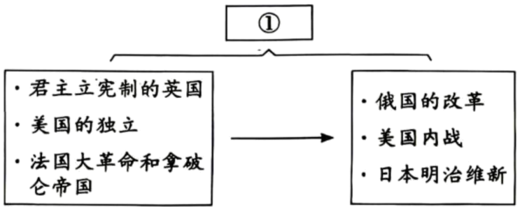
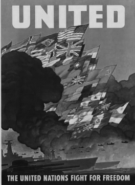
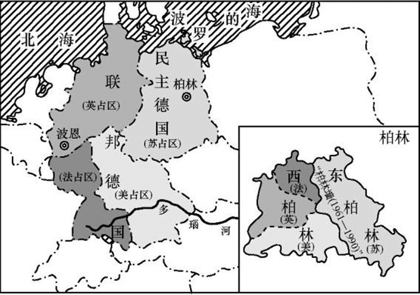

2026年北京丰台区九年级学业水平考试历史试题 · 选择题 第11、12、13、14、15题 · 对应解析
11. 荷兰莱顿自然博物馆中的“欧洲1542—1544年标本集”里收录了一张原产于美洲的西红柿标本（见下图）。这源于（ ）
A. 亚历山大东征B. 租地农场出现C. 新航路开辟D. 进化论提出
【答案】C
【解析】
【详解】A.亚历山大东征发生于公元前4世纪，仅促进欧亚非的交流，未涉及美洲，不符合题意，错误。
B.租地农场是欧洲新的农业生产经营方式，和美洲物种传入欧洲无关，不符合题意，错误。
C.题干关键信息为16世纪中期、原产于美洲的西红柿出现在欧洲标本集。新航路开辟于15世纪末16世纪初，开辟后世界开始连为一个整体，促进了全球物种交流，原产美洲的西红柿因此传播到欧洲，正确。
D.进化论是19世纪达尔文提出的生物学理论，时间和内容均不符合题意，错误。
12. 下图是某同学复习时绘制的思维导图。图中①处应填写（ ）

A. 资本主义萌芽开始出现
B. 资本主义制度的确立与扩展
C. 国际共产主义运动兴起
D. 世界格局向多极化趋势发展
【答案】B
【解析】
【详解】A.资本主义萌芽出现于中世纪晚期手工工场发展阶段，和题干事件不符，错误。
B.左侧英国君主立宪制确立、美国独立、法国大革命，都属于资本主义制度的早期确立；右侧俄国改革、美国内战、日本明治维新，都推动了资本主义制度在世界范围的扩展，因此①对应“资本主义制度的确立与扩展”，正确。
C.题干事件均为资产阶级革命与改革，和国际共产主义运动兴起无关，错误。
D.世界格局多极化趋势是冷战后的发展趋势，和题干事件时代不符，错误。
13. 下表呈现了罗斯福新政时期政府推行的部分措施，能够体现出美国政府（ ）
第一阶段（1933-1934） 应急与复兴 | 《紧急银行法案》 |
《全国工业复兴法》 | |
《农业调整法》 | |
第二阶段（1935-1938） 改革与保障 | 《1935年银行法》 |
《全国劳工关系法》 | |
《社会保障法》 |
A. 用粮食税代替余粮收集制
B. 通过立法手段干预经济
C. 奉行自由放任政策
D. 推行马歇尔计划
【答案】B
【解析】
【详解】A.用粮食税代替余粮收集制是苏俄新经济政策的内容，与罗斯福新政无关，错误。
B.表格中《紧急银行法案》《全国工业复兴法》《农业调整法》《社会保障法》等都是通过立法手段来干预经济，体现了美国政府通过立法干预经济，正确。
C.奉行自由放任政策是胡佛政府的政策，罗斯福新政实行国家干预经济，错误。
D.马歇尔计划是二战后美国对欧洲的经济援助计划（1947年），与罗斯福新政（1933—1938年）无关，错误。
14. 下侧宣传海报创作于1942年。海报顶部英文意为“联合”，底部英文意为“联合国家为自由而战”，中部展示了不同国家的旗帜、还有冒着浓烟向前行进的战舰。这张海报创作的背景是（ ）

A. 第一次世界大战的爆发B. 十月革命的胜利
C. 世界反法西斯同盟建立D. 不结盟运动兴起
【答案】C
【解析】
【详解】A.第一次世界大战爆发于1914年，时间与1942年不符，错误。
B.十月革命胜利于1917年，时间与1942年不符，错误。
C.1942年1月，26个国家签署《联合国家宣言》，标志着世界反法西斯同盟正式建立。海报中“联合”“联合国家为自由而战”正是这一背景的体现，正确。
D.不结盟运动兴起于1961年，时间与1942年不符，错误。
15. 下面这幅“四国分区占领德国示意图”反映出（ ）

A. 欧洲冷战对峙局面形成B. 社会主义阵营形成
C. 社会保障制度不断发展D. 欧洲一体化进程加快
【答案】A
【解析】
【详解】A.二战后，德国被美、苏、英、法四国分区占领，反映了美苏冷战在欧洲的对峙局面（西方占领区与苏联占领区对立），正确。
B.社会主义阵营形成是以苏联为首的东欧社会主义国家组成的，四国分区占领德国不能直接反映社会主义阵营形成，错误。
C.社会保障制度不断发展与德国分区占领无关，错误。
D.欧洲一体化进程加快是20世纪50年代以后（欧共体成立），时间晚于德国分区占领，错误。